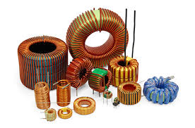
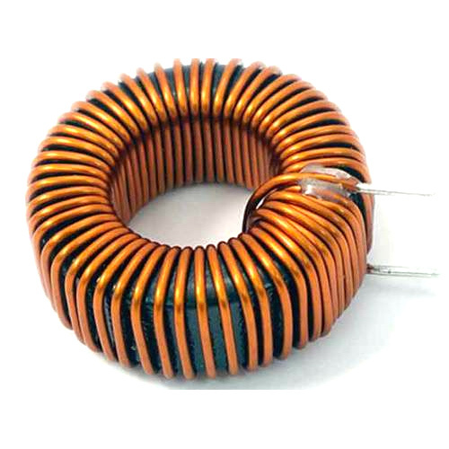
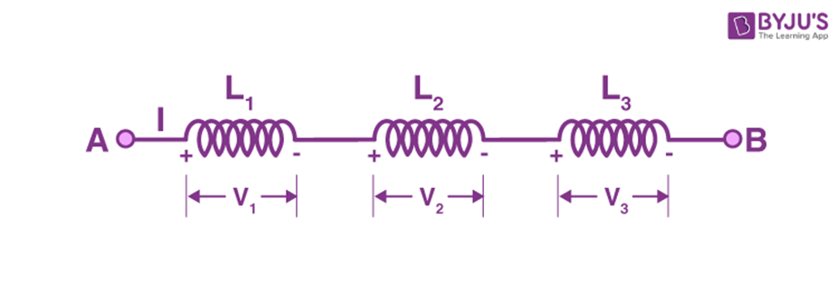

Circuitos Eléctricos
Peregrina Chavarría José Elías - Briseño Rodríguez Ivana Naomi
Inductor
¿Qué es?
Un inductor es un componente pasivo que se utiliza en la mayoría de los circuitos electrónicos de potencia para **almacenar energía en forma de magnetismo** cuando se le aplica electricidad. Una de las propiedades clave de un inductor es que impide o se opone a cualquier cambio en la intensidad de la corriente que lo atraviesa.

Cuando la corriente que pasa por el inductor cambia, este adquiere o pierde carga para igualar la corriente. El inductor también se conoce como **bobina**, **reactor** o simplemente **bobina**.¿Para qué sirve?
Los inductores pueden utilizarse para dos funciones principales: **Para controlar las señales** y **Para almacenar energía**.
Señales de control
El funcionamiento del inductor depende de la frecuencia de la corriente que lo atraviesa. Es decir, las señales de mayor frecuencia se transmiten con menor facilidad y viceversa. Esto significa que **bloquea la corriente alterna (CA)** y **permite el paso de la corriente continua (CC)**. Por lo tanto, puede utilizarse para bloquear señales de CA. Los inductores se pueden usar junto con los condensadores para formar **filtros LC**.
Almacenamiento de energía
Un inductor almacena energía en forma de **energía magnética**. Las bobinas ofrecen un medio para almacenar energía basándose en la inductancia, aprovechando la propiedad de que una corriente eléctrica que fluye a través de una bobina produce un campo magnético, el cual, a su vez, produce una corriente eléctrica.
Diferentes tipos de inductores
Tipos de inductores por material central
Inductor de núcleo de aire
Este tipo no tiene metal o material magnético dentro de solo una bobina de alambre. No puede almacenar mucha energía, pero funciona bien con señales rápidas como las de radios y antenas. Como no hay núcleo de metal, tampoco es muy ligero y no se ve afectado por las pérdidas magnéticas.
Inductor de núcleo de hierro
Este tiene una pieza sólida de hierro dentro de la bobina. El hierro ayuda a aumentar cuánta energía puede manejar la bobina. Estos inductores se usan en circuitos lentos o de baja frecuencia como sistemas de sonido o filtros de potencia. Son fuertes pero pueden perder más energía a altas velocidades.
Inductor de núcleo de ferrita
Un inductor de núcleo de ferrita utiliza material llamado **ferrita** en su centro. La ferrita está hecha de óxido de hierro y cerámica, lo que le da propiedades magnéticas al tiempo que no es conductora. Ayuda a reducir algo llamado pérdida de corriente de Eddy. Una de las mejores cosas de Ferrite es que funciona muy bien con **señales de alta frecuencia**, como adaptadores de potencia, cargadores de teléfonos y radios. Los inductores de núcleo de ferrita son livianos, compactos y eficientes. Hay dos tipos principales: Ferrita suave (utilizado en electrónica de alta frecuencia) y Ferrita dura (usado en imanes, no inductores).
Inductor de núcleo de polvo de hierro
En lugar de una pieza sólida, este tipo usa pequeños trozos de hierro presionados. Es bueno para manejar **corrientes más altas** sin sobrecalentamiento. A menudo se usa en circuitos que cambian de voltaje, como los de los dispositivos con batería. No es tan fuerte como Ferrite, pero es más estable con grandes corrientes.
Inductor de núcleo de cerámica
Este usa un centro de cerámica (no metal). La cerámica no ayuda a aumentar la energía, pero mantiene al inductor **estable y preciso**. Estos se utilizan en circuitos muy rápidos, como en transmisores de radio o herramientas de comunicación, donde la precisión importa más que la potencia.
Inductor de núcleo de acero laminado
Esto tiene muchas capas delgadas de acero apiladas. Las capas ayudan a reducir la energía desperdiciada del calentamiento. Estos se utilizan en **máquinas grandes** y sistemas de potencia de CA como transformadores. Son fuertes, buenos para el trabajo de servicio pesado.
Tipos de inductores basados en el diseño
Inductor de núcleo toroidal
Un inductor de núcleo toroidal es un tipo de inductor que tiene un centro redondo en forma de anillo, como una dona. [Image of a toroidal core inductor]

El cable está envuelto alrededor de este anillo. Debido a la forma del anillo, la mayor parte del campo magnético permanece dentro del núcleo, por lo que **no afecta a otras partes cercanas**. Esto ayuda al inductor a funcionar mejor y desperdiciar menos energía. Se usan en fuentes de alimentación, sistemas de sonido y dispositivos que necesitan electricidad limpia y estable.Inductor de núcleo de batería/bobina
Un inductor de núcleo de tambor o bobina tiene forma de carrete, con alambre envuelto alrededor de un poste central. No contiene completamente el campo magnético. Hay dos tipos: **Sin blindaje** (diseño abierto, maneja más corriente, pero crea más EMI) y **Protegido** (tiene una cubierta magnética para contener el campo, reduciendo EMI). Estos inductores se utilizan en convertidores de potencia y filtros.
Inductor de múltiples capas
Un inductor de múltiples capas es un inductor **muy pequeño** hecho al apilar capas delgadas de bobina y material dentro de un pequeño chip. La bobina se imprime en formas espirales planas en cada capa. Es perfecto para **teléfonos, tabletas y otros productos electrónicos compactos**. Ayuda a reducir el ruido, las señales suaves y a menudo se usa en circuitos de alta frecuencia.
Tipos de inductores basados en el uso
Inductor de energía
Un inductor de energía está hecho para manejar una **alta corriente** y almacenar energía en su campo magnético. Ayuda a suavizar el voltaje, reducir el ruido y proteger los circuitos de los picos de potencia. Se usa comúnmente en fuentes de alimentación, convertidores DC-DC, cargadores y dispositivos con batería.
Inductor de estrangulamiento
Un inductor de estrangulador se usa principalmente para **bloquear o reducir el ruido no deseado** o las señales de alta frecuencia en un circuito. Se centra en limpiar la señal, resistiendo el ruido de alta frecuencia mientras permite que fluyan señales constantes (CC o CA de baja frecuencia). Esto lo hace útil en sistemas de audio, líneas eléctricas y filtros electrónicos.
Inductor de carga
Se utiliza un inductor de carga para **simular una carga real** en un circuito, principalmente para fines de prueba y medición. Crea resistencia al cambio de corriente, ayudando a probar cuán estable o fuerte es una fuente o sistema de energía. Se encuentra comúnmente en los laboratorios y configuraciones de pruebas de equipos.
Fórmulas
Inductores en paralelo
Cuando los inductores se conectan en paralelo, su inductancia efectiva disminuye. El voltaje en cada inductor es el mismo. La corriente total es la suma de las corrientes:

IT = I1 + I2 + I3
La inductancia total se calcula como:
1 / LT = 1 / L1 + 1 / L2 + 1 / L3 + ...
Si solo hay dos inductores en paralelo:
LT = (L1 · L2) / (L1 + L2)
La inductancia total en paralelo siempre es menor que la menor inductancia.
Inductores en serie
Cuando los inductores se conectan en serie sin inductancia mutua, la inductancia total aumenta:
LT = L1 + L2 + L3 + ...

Inductores en serie acoplados diferencialmente

Cuando los campos magnéticos se oponen:
LT = L1 + L2 – 2M
Inductores en serie acoplados acumulativamente
Cuando los campos se refuerzan mutuamente:
LT = L1 + L2 + 2M
PROBLEMAS
Inductores en serie (sin mutua)
LT = 10 mH + 40 mH + 50 mH = 100 mH
Inductores acoplados ej1 (Acumulativo)
LT = 10 mH + 10 mH + 2(5 mH) = 30 mH
Inductores acoplados ej2
LT = L1 + L2 + 2M
100 = 20 + 60 + 2M
100 = 80 + 2M
2M = 20
M = 10 mH
Inductores en paralelo (sin mutua)
1 / LT = 1/60 + 1/120 + 1/75
1 / LT = 23/600
LT = 600 / 23 ≈ 26.087 mH
Inductores en paralelo (con mutua)
Fórmula general:
LT = (L1 L2 − M²) / (L1 + L2 ± 2M)
Solución (acumulativo):
LT = (75 · 55 − 22.5²) / (75 + 55 + 45)
LT = (4125 − 506.25) / 175
LT = 3618.75 / 175 ≈ 20.68 mH
Problema extra: Circuito inductivo equivalente

Paso 1
1 / LA = 1 / L5 + 1 / L6 + 1 / L7
Paso 2
1 / LB = 1 / L3 + 1 / L4 + 1 / LA
Paso 3
1 / LEQ = 1 / L1 + 1 / L2 + 1 / LB
La inductancia equivalente es: 15 mH.